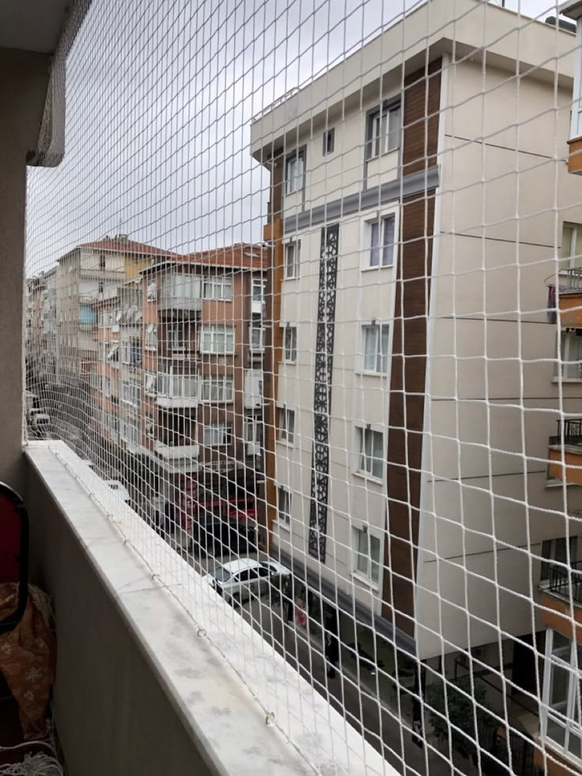
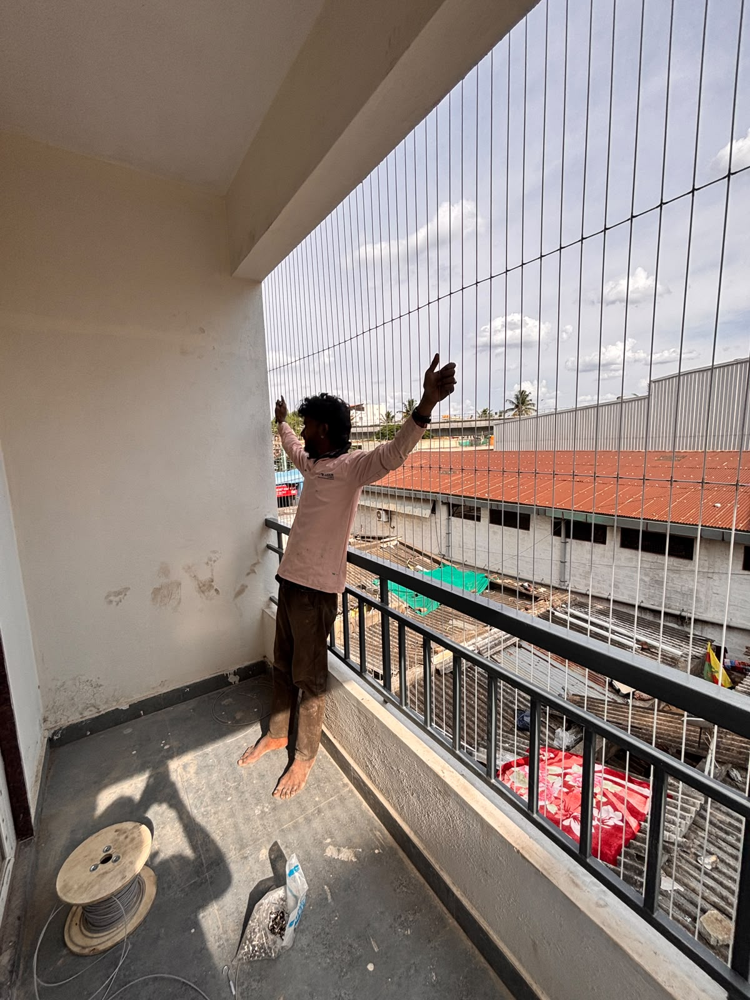
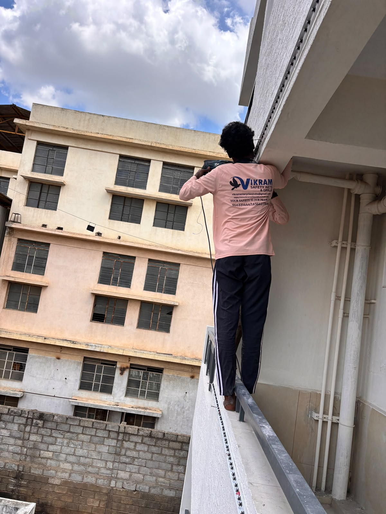
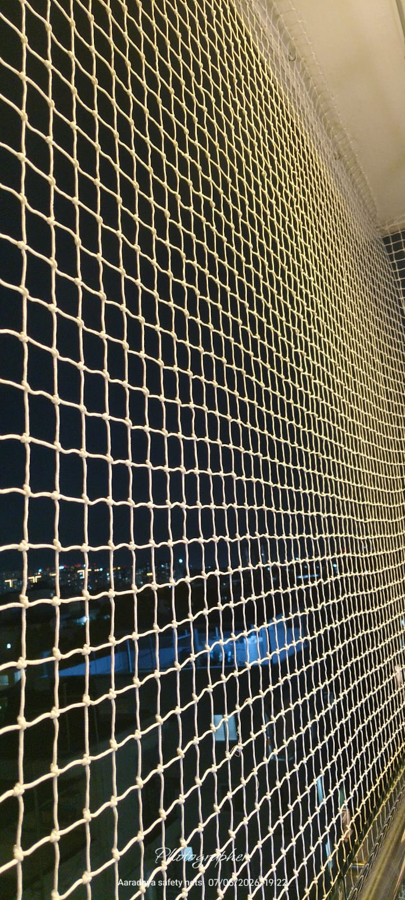
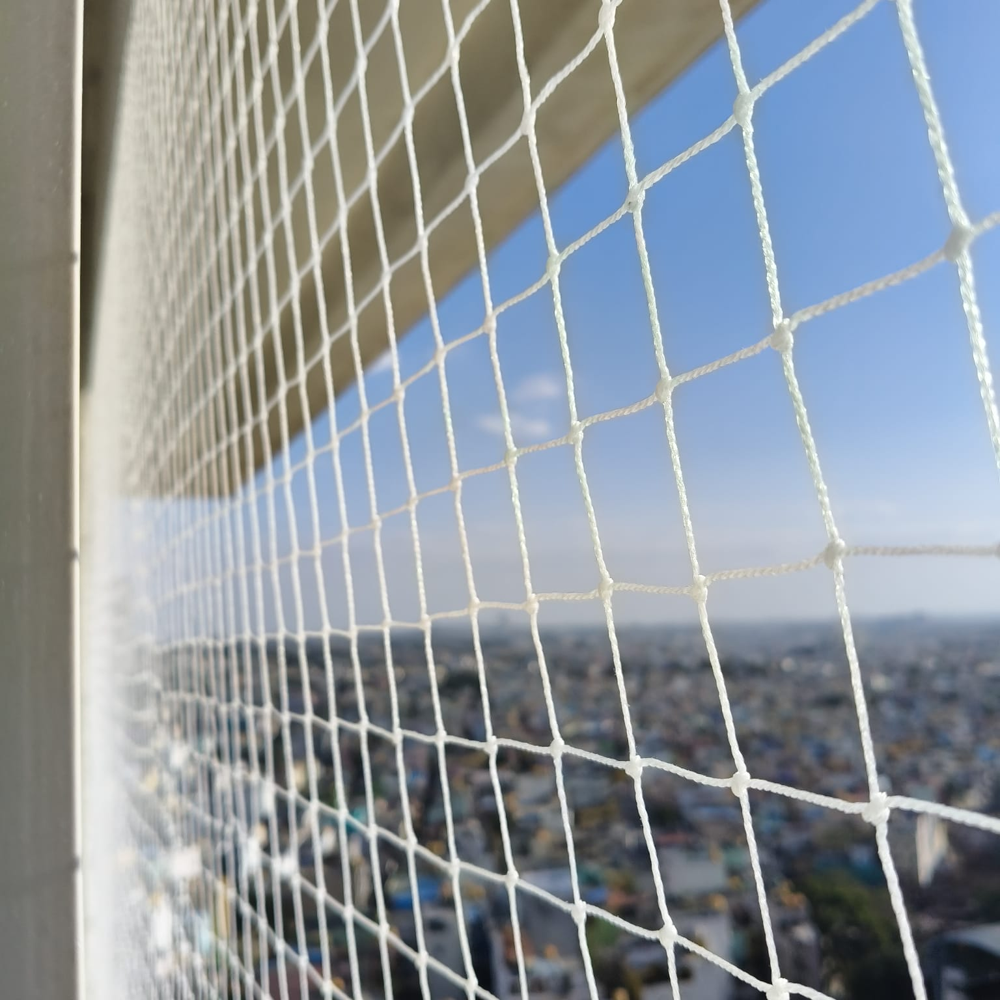
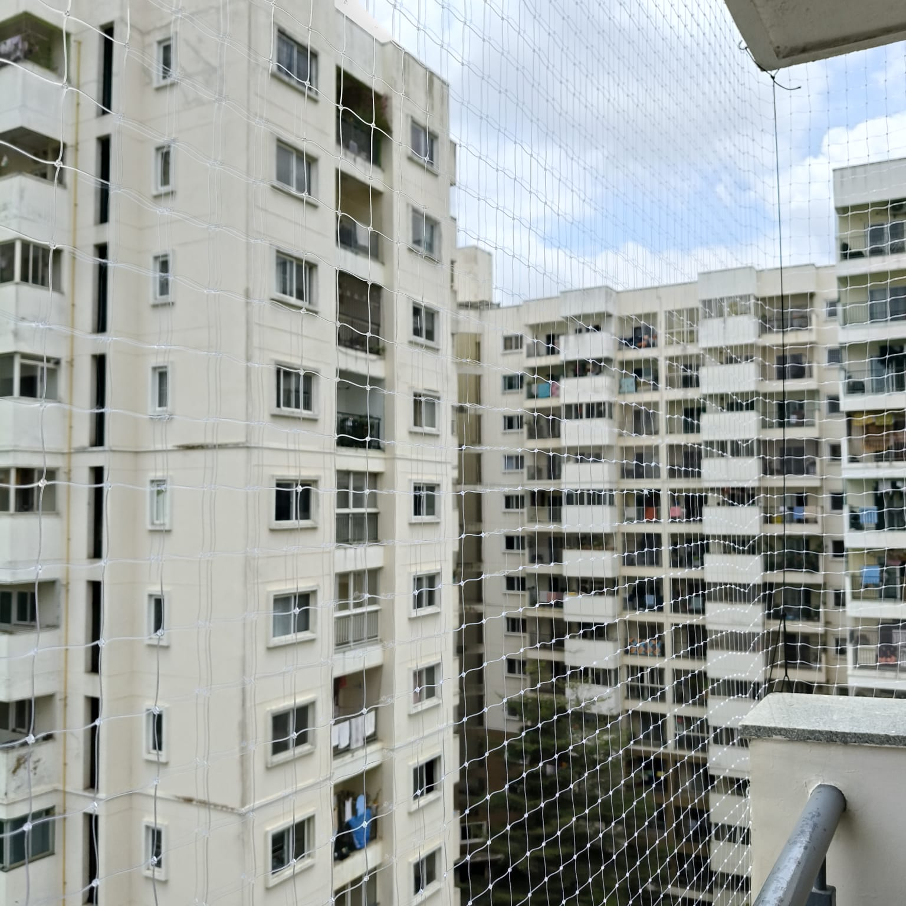
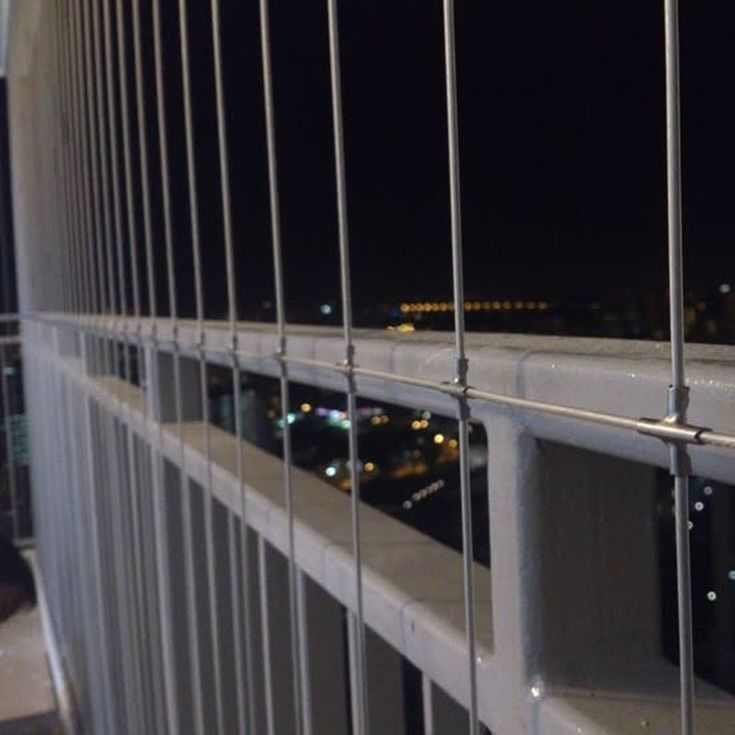
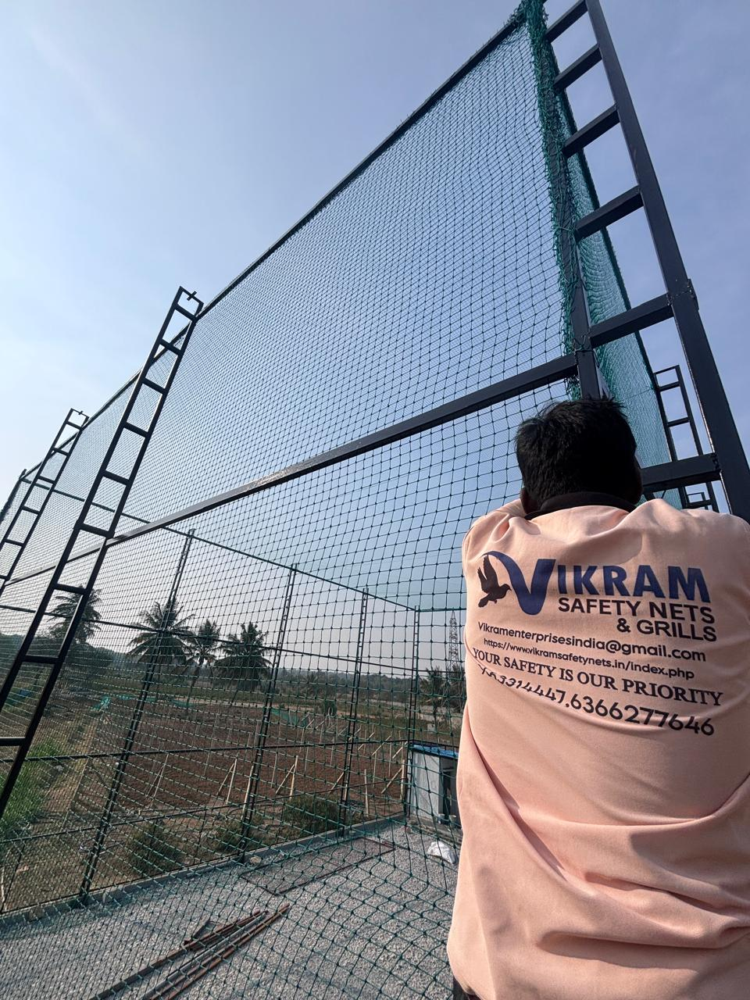

Balcony Safety Nets Installation
Professional balcony safety nets installation with careful measurement and secure fitting.

Sarathi Safety Nets provides professional balcony safety nets in Bangalore for residential and commercial properties. Our balcony safety nets are customized according to the size, structure and usage of each installation area.
With 10+ years of installation experience, Sarathi focuses on strong, durable, UV-resistant and weather-resistant materials suitable for regular use. Our balcony safety nets installation in Bengaluru is carried out with careful measurement, secure fixing and clean finishing.
We serve apartments, villas, independent homes, offices, schools, hospitals, commercial buildings and other suitable properties across Bengaluru. Our experienced team provides practical balcony safety nets solutions based on the requirements of each customer.
Customers looking for balcony safety nets in Bangalore can contact Sarathi for professional inspection, consultation and installation. We provide customized solutions across major areas of Bengaluru with quality materials and experienced workmanship.
Customers looking for the best anti bird nets in Bangalore can contact Sarathi Anti Bird Nets for professional consultation and installation. With our experienced team, quality materials and wide service coverage across Bengaluru , we provide customized solutions for different types of bird protection requirements. Our goal is to make homes and properties cleaner, safer and protected from unwanted bird entry with properly installed anti bird nets.
Successful Installations
Years Experience
Premium Quality
Customer Support
Sarathi provides customized balcony safety nets solutions across Bengaluru using durable materials, experienced installation and secure finishing for residential and commercial properties.
Professional balcony safety nets installation with careful measurement and secure fitting.

Customized balcony safety nets solutions for independent homes and residential properties.

Balcony Safety Nets solutions designed for flats, towers and gated communities.

Practical balcony safety nets solutions for suitable balcony areas.

Customized protection for suitable residential window openings.

Durable balcony safety nets solutions for offices and commercial buildings.

Customized installations for villas and independent houses.

Professional installation for suitable high-rise structures.

Protective solutions for suitable open spaces.

Made-to-measure balcony safety nets based on each property's requirements.

Support and inspection for existing balcony safety nets installations.

Professional balcony safety nets services across major areas of Bengaluru.
Sarathi Anti Bird Nets is a trusted provider of Anti Bird Nets in Bangalore , offering professional bird protection solutions for residential and commercial properties. We provide Anti Bird Nets , Pigeon Protection Nets , Pigeon Nets , Bird Protection Nets , Balcony Bird Nets and customized Bird Control Nets for apartments, villas, independent houses, offices, schools, hospitals and commercial buildings.
With 10+ years of experience , Sarathi Anti Bird Nets focuses on providing strong, durable, UV-resistant and weather-resistant bird nets for long-lasting outdoor protection. Our Anti Bird Net Installation in Bengaluru can be customized for balconies, windows, ducts, terraces and open spaces to help prevent unwanted bird entry while maintaining a neat appearance.
Sarathi Anti Bird Nets provides professional bird protection services across Bengaluru . Our experienced installation team serves major residential and commercial areas throughout Bangalore with properly measured and securely fitted Anti Bird Nets . Whether you are looking for Pigeon Nets in Bangalore , Anti Bird Nets near you or customized Bird Protection Nets in Bengaluru , our team can provide a suitable solution based on your property's requirements.
Our goal at Sarathi Anti Bird Nets is to provide quality bird protection solutions with experienced installation, durable materials and professional finishing. From small residential balconies to larger commercial properties, we provide customized Anti Bird Net solutions in Bangalore designed according to the size and structure of each installation area.

Years of Experience
Explore our balcony safety nets installations completed across Bengaluru for homes, apartments and commercial properties.


Find answers to common questions about balcony safety nets in Bangalore, installation, materials, customization and service coverage across Bengaluru.
Balcony Safety Nets can be customized for suitable residential and commercial areas according to the structure and required coverage.
Yes. Sarathi provides professional balcony safety nets installation across Bengaluru for homes, apartments and commercial properties.
Yes. Measurements, materials and fittings can be selected according to the installation area's size and structure.
Sarathi uses durable materials selected according to the service, location and expected outdoor or indoor usage.
Installation time depends on the size, accessibility and complexity of the area. A site inspection helps determine the work required.
Sarathi focuses on experienced installation, quality materials, secure fitting and customized solutions across Bengaluru.
Sarathi Anti Bird Nets focuses on providing quality Anti Bird Nets in Bangalore with experienced installation, durable materials and customized solutions. We understand that every balcony, window, duct and open space has different requirements, so our team provides properly measured and securely fitted bird protection nets for each property.

Years of Experience
We use quality materials selected for dependable balcony safety nets performance and long-lasting protection.

Durable materials suitable for regular use and outdoor applications where required.

Strong materials selected for dependable balcony safety nets installations.

Suitable material options for areas exposed to changing outdoor conditions.

Professional fixing methods for stable and neat installations.

Sarathi provides professional balcony safety nets installation across Bangalore for apartments, villas, independent homes, offices and commercial properties. Our team serves major residential and business areas throughout Bengaluru.
We specialize in customized balcony safety nets, with proper measurement, durable materials and secure fitting according to the requirements of each property. Our experienced technicians focus on neat and reliable installation.
From residential buildings to larger commercial spaces, Sarathi provides practical balcony safety nets solutions in Bengaluru. We assess the installation area and recommend a suitable approach based on size, structure and usage.
With 10+ years of installation experience, Sarathi continues to provide balcony safety nets services across Bengaluru with quality materials, professional workmanship and customer-focused support.
With 10+ years of experience , Sarathi Anti Bird Nets continues to provide professional bird protection services for residential and commercial properties. Our service coverage extends across major areas and neighborhoods throughout Bengaluru , helping customers find suitable Anti Bird Net installation services in Bangalore based on their property's requirements.
We have completed balcony safety nets installations for residential and commercial properties across Bengaluru, with customized solutions for different site requirements.
Fill out the form below and our team will contact you within 15–30 minutes with the best quotation for your Balcony Safety Nets, Invisible Grills, Pigeon Safety Nets, Mosquito Nets, Clothes Hangers and other safety solutions.